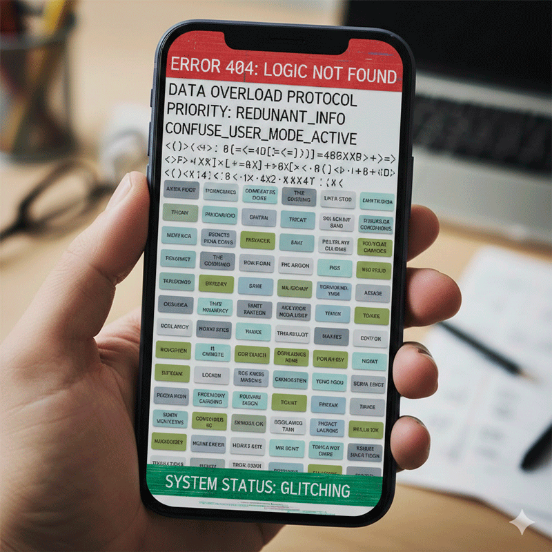
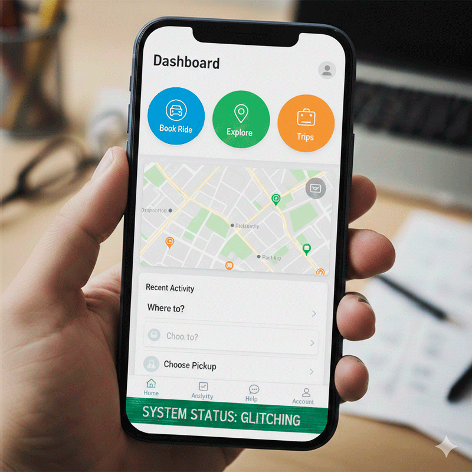
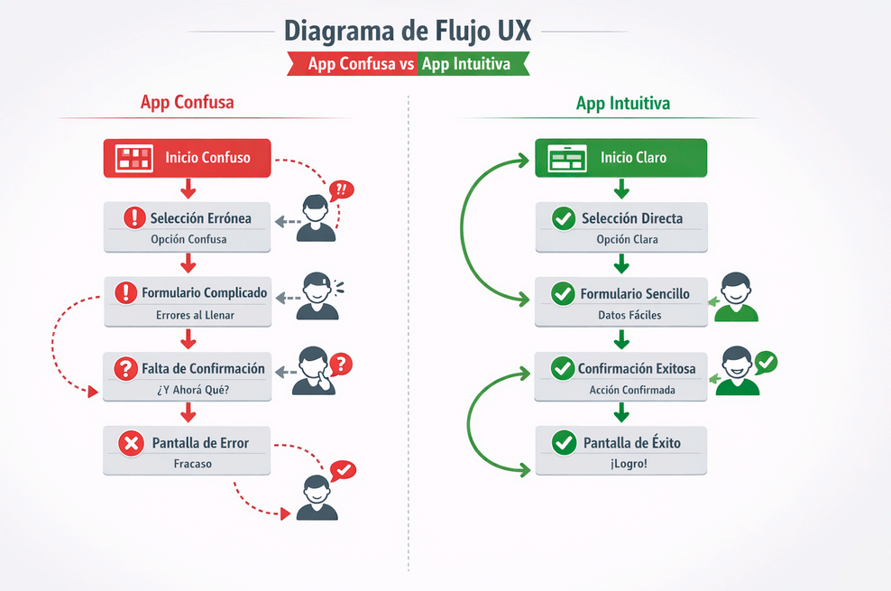
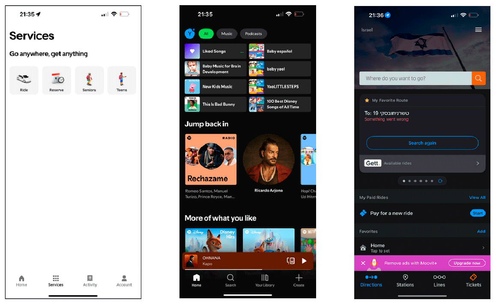

Imagina que tienes prisa...
Estás apurada y la aplicación no responde como esperas. Todo se vuelve confuso y frustrante.

Ahora con una app bien diseñada
El proceso es claro, rápido y sin esfuerzo. No tienes que pensar, simplemente funciona.

Misma situación. Diferente experiencia.
El diseño de interacción transforma procesos frustrantes en experiencias claras y naturales.
Entendamos el concepto
La diferencia está en el diseño de interacción. No se trata solo de cómo se ve una app. Se trata de cómo responde, cómo te acompaña paso a paso y cómo anticipa lo que necesitas. Un buen diseño te permite usar la aplicación casi sin pensar.
Al diseñar experiencias se busca reducir fricciones, dar retroalimentación inmediata, organizar la información de forma clara y hacer que cada acción tenga sentido. Cada detalle está pensado. No es casualidad. Es diseño consciente.

Algunos ejemplos reales
Muchas aplicaciones actuales funcionan de manera intuitiva porque su diseño guía al usuario, muestra el siguiente paso y evita confusiones.

Cuando una interfaz está bien diseñada, casi no la notas. Simplemente funciona. El diseño de interacción transforma una experiencia complicada en algo claro, rápido y natural, generando confianza y tranquilidad en el usuario.